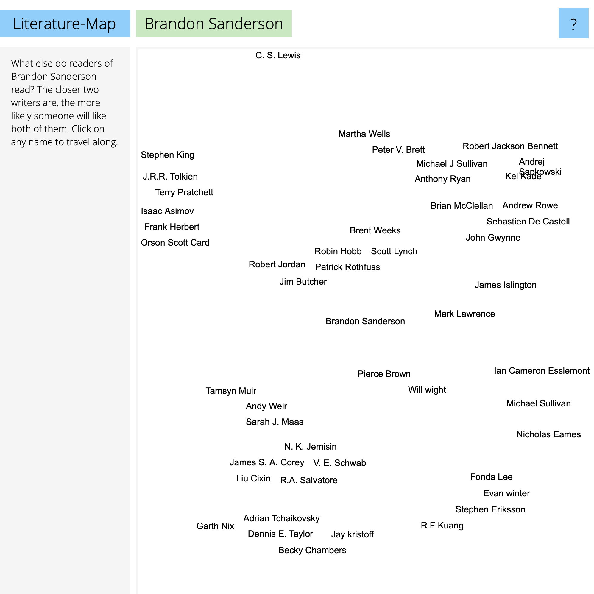

Literature-Map

If you're literarily inclined, this is a fun tool. Enter an author's name, and it shows similar authors. I read a variety of types of books, so it's fun to see the results of the various authors I've tried - and to get ideas on new authors.